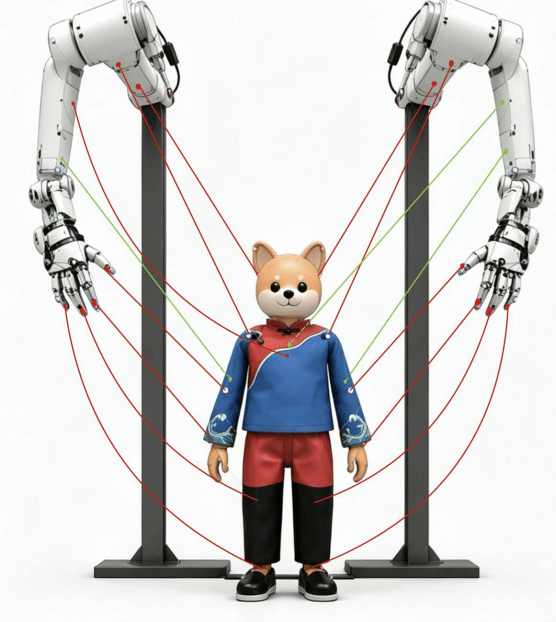
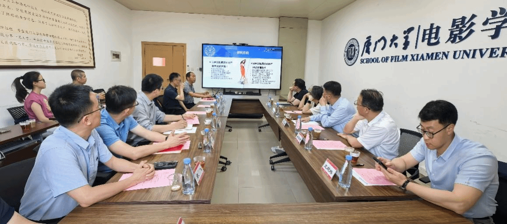
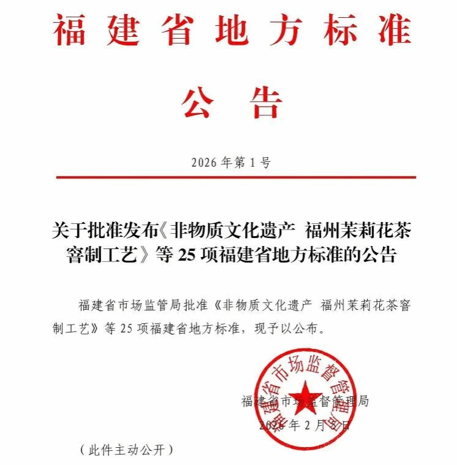
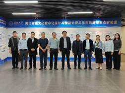
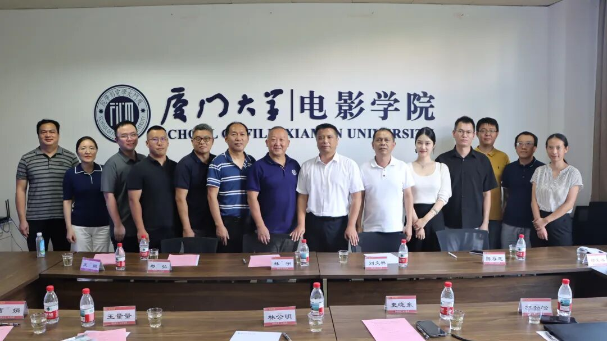
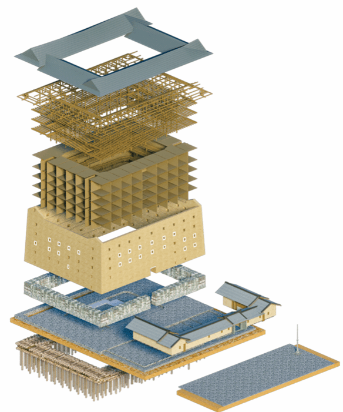
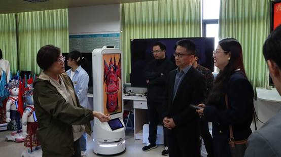
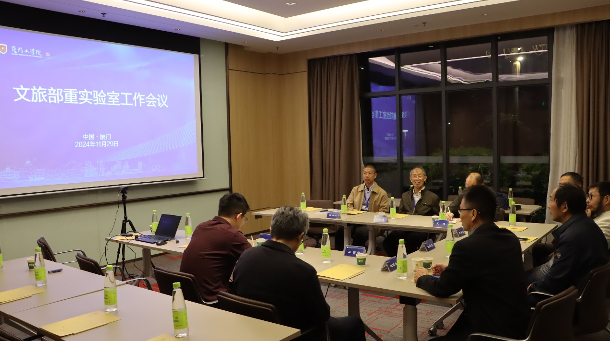
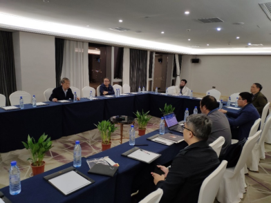

新闻动态
聚焦实验室科研进展、学术交流、成果应用与合作动态。
新闻动态

喜报 | 我实验室再获2026年度文化和旅游部重点实验室资助项目
近日，文化和旅游部官网公示2026年度文化和旅游部重点实验室资助项目立项名单，我实验室申报项目《基于灵巧手的提线木偶互动表演系统》成功获批。本项目由厦门大学闽台非遗文化数字化保护与智能处理文化和旅游部重点实验室副主任姚俊峰教授团队牵头，联合厦门辰瑞电子科技有限公司共同攻关，依托机器人灵巧操控、人机交互、智能动作生成等前沿技术，赋能国家级非遗16线提线木偶活态传承创新。经文旅部组织多轮遴选与专家评审，全国本年度入选项目数量有限，本项目成功突围立项。
阅读详情 →
2026闽台非遗文旅部重战略研讨会在闽江大学召开
2026年7月7日，闽台非遗文旅部重战略研讨会在福建闽江大学召开。本次研讨会由闽台非遗文化数字化保护与智能处理文化和旅游部重点实验室主办，围绕实验室未来重点攻关方向、团队协作机制、闽台特色深化路径等核心议题展开深入研讨。
阅读详情 →
喜报 | 实验室王量量老师团队学术成果获国家主流媒体报道
6月13日，在第21个“文化和自然遗产日”，中央广播电视总台新闻频道（CCTV13）推出文化遗产保护专题报道，聚焦数字技术赋能中华优秀传统文化保护传承。实验室副主任、厦门大学建筑与土木工程学院王量量教授研究团队长期开展的闽浙木拱廊桥数字化保护与传统营造技艺研究作为典型案例受到重点关注。
阅读详情 →
文化和旅游部科技教育司副司长肖健一行莅临厦门大学闽台非遗文旅部重点实验室调研
2026年4月27日下午，文化和旅游部科技教育司副司长肖健一行，莅临厦门大学闽台非遗文化数字化保护与智能处理文化和旅游部重点实验室开展调研。
阅读详情 →
全国首个两岸民宿共通标准正式发布
2026年2月5日，福建省市场监督管理局正式批准福建省地方标准《海峡两岸共通旅游民宿服务规范》（标准编号：DB35/T 2295—2026，下文简称《规范》），并予以公布。该标准将于2026年5月5日正式实施。
阅读详情 →
闽台非遗数字文化基因会议在武夷山召开
2025年12月5日至7日，“福建省人工智能学会2025年学术年会暨闽台非遗数字文化基因会议”在福建武夷山圆满举行。本次会议由福建省人工智能学会主办，武夷学院承办，厦门大学、闽台非遗文化数字化保护与智能处理文化和旅游部重点实验室等多家单位联合协办。会议汇聚了来自浙江大学、北京理工大学、西北大学、厦门大学等高校及两岸文化机构的众多专家学者，共同探讨智能科技赋能文化遗产保护与传承的前沿路径。
阅读详情 →
厦门大学文旅部重点实验室赋能连城数字文旅创新发展
为推动高校科研成果转化，助力地方文旅产业数字化升级，11月12日至13日，厦门大学闽台非遗文化数字化保护与智能处理文旅部重点实验室与连城县人民政府、元启创新（厦门）机器人有限公司开展系列考察交流活动，以技术赋能为核心，共探校地校企协同发展新路径。
阅读详情 →
喜报|实验室教师主持的设计项目在第九届新加坡规划师学会规划奖评比中喜获佳绩
近日，新加坡规划师学会揭晓第九届新加坡规划师学会规划奖（SIP Planning Awards）获奖名单，由我校闽台非遗文化数字化保护与智能处理文化和旅游部重点实验室副主任王量量教授、成员韩洁副教授分别主持，建筑与土木工程学院多位师生共同参与的两项设计项目《漳州市南靖县坎下村长荣土楼群文化提升与场所营造》、《泉州市晋江市龙湖镇福林传统村落遗产保护与文化提升》分别获得“城市设计、文化遗产与保育卓越奖” 铜奖、特别提名奖。
阅读详情 →
福建省文旅厅副厅长林宇一行莅临厦门大学闽台非遗文旅部重点实验室调研
2025年9月16日下午，为落实福建省文化和旅游厅党组 “五抓五聚焦” 工作要求，推进数字文旅产品供给丰富化，省文化和旅游厅党组成员、副厅长林宇一行，莅临厦门大学闽台非遗文化数字化保护与智能处理文化和旅游部重点实验室开展调研指导。厦门大学电影学院党委书记林公明，重点实验室主任、信息学院史晓东教授，实验室副主任、建筑与土木工程学院王量量教授，以及信息学院苏劲松教授、电影学院刘昆宏教授、吴清锋教授、陈俐燕副教授，数学科学学院曹娟教授等参加调研。
阅读详情 →
喜报|我实验室获2025年度文化和旅游部重点实验室资助项目
近日，国家文化和旅游部公布了“2025年度文化和旅游部重点实验室资助项目”立项名单。我实验室“非遗密码：闽台乡村建筑遗产营造技艺基因图谱与同源性研究”项目成功获批。该项目由厦门大学“闽台非遗文化数字化保护与智能处理实验室”副主任王量量教授团队牵头，将运用人工智能、三维数字化等前沿技术，解码闽台传统建筑营造技艺的文化基因。据悉经文旅部组织遴选和评审，全国共有12个项目入选。
阅读详情 →
福建省文旅厅科技教育处一行赴厦门大学电影学院考察
11月29日上午，福建省文旅厅科技教育处处长、一级调研员林赪一行赴厦门大学电影学院考察交流，旨在探讨数字科技赋能新文旅、以科技创新助力福建文旅产业的高质量发展、数字科技在文旅产业所取得的研究进展和实践成果等主题。
阅读详情 →
第三届闽台非遗数字化保护与智能处理学术会议召开
第三届闽台非遗数字化保护与智能处理学术会议于2024年11月29日-12月1日在厦门召开，主题为“数字科技赋能新文旅”；同期举办福建省人工智能学会2024年学术年会，主题为“混合智能”。本次会议由福建省人工智能学会主办，厦门工学院承办，厦门大学、闽台非遗文化数字化保护与智能处理文化和旅游部重点实验室等单位协办，并得到厦门大学社科处、科技处、信息学院、电影学院、建筑与土木工程学院的大力支持。
阅读详情 →
福建省人工智能学会2023年学术年会暨第二届闽台非遗数字化保护与智能处理学术会议召开
福建省人工智能学会2023年学术年会暨第二届闽台非遗数字化保护与智能处理学术会议于2023年12月1-3日在福州永泰召开，会议主题为“通用智能与语言模型”；同期举办“第二届闽台非遗数字化保护与智能处理会议”，会议的主题是“非遗的智能处理”。本次会议由福建省人工智能学会主办，福州工商学院承办，厦门大学、闽台非遗文化数字化保护与智能处理文化和旅游部重点实验室等单位协办，并得到厦门大学社科处、科技处、信息学院、电影学院、建筑与土木工程学院、厦门大学电影学院——海城映象电影技术联合研究中心的大力支持。
阅读详情 →
厦门大学闽台非遗文化数字化保护与智能处理文旅部重点实验室与建筑与土木工程学院受邀参展第六届数字中国建设峰会
厦门大学闽台非遗文化数字化保护与智能处理文旅部重点实验室与建筑与土木工程学院联合多个文旅单位、乡村单位、设计协会等单位，长期在福建省乡村与建筑遗产方面开展多项数字化相关课题工作与研究，获得乡村与建筑遗产数字信息展示平台建设、城乡遗产数字化、文化挖掘与传播等多项科研转化成果。
阅读详情 →
福建省人工智能学会2022年学术年会暨首届闽台非遗数字化保护与智能处理会议在龙岩市顺利召开
福建省人工智能学会2022年学术年会暨首届闽台非遗数字化保护与智能处理会议于2022年12月9-10日在龙岩市召开，会议主题为“人工智能赋能文旅”，采用“线上+线下”相结合的形式举行。来自北京大学、清华大学、浙江大学、厦门大学等高校近百名相关学科领域专家学者和企业家代表参加了本次线上和线下的会议。
阅读详情 →